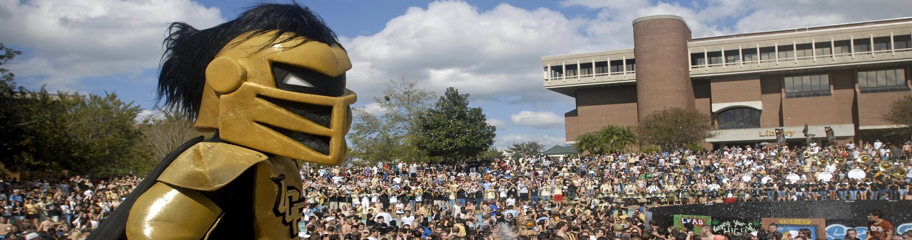

<!--This section is navigation-->
<div class="navbar-wrapper">
  <nav class="navbar navbar-default navbar-fixed-top" role="navigation">
    <div class="container">

      <!-- Define "Bing's Blog" button -->
      <div class="navbar-header page-scroll">
        <!-- define a buttion in the top page -->
        <button type="button" class="navbar-toggle collapsed" data-toggle="collapse" data-target="#navbar" aria-expanded="false" aria-controls="navbar">
          <span class="sr-only">Toggle navigation</span>
          <span class="icon-bar"></span>
          <span class="icon-bar"></span>
          <span class="icon-bar"></span>
        </button>
        <!-- In this botton, define a refrerence which points to the top-->
        <a class="navbar-brand" href="#page-top" id="i18_title">
          <span data-i18n="website.title">{{ site.title }}</span>
        </a>
      </div>

      <!-- Define navigations -->
      <div id="navbar" class="navbar-collapse collapse">
        <ul class="nav navbar-nav navbar-right" id="i18_navbar">

          <!-- Tranverse the landing.yml file to create different navigation element-->
          {% for section in site.data.landing %}
          <li>
            <a class="page-scroll" href="#{{ section.id }}">
              <span data-i18n="{{ section.i18n }}">{{ section.name }}</span>
            </a>
          </li>
          {% endfor %}

          <!-- Setting the language supported by this site -->
          {% for language in site.data.index.language %}
          <li>
            <a id="set_lang_{{ language.locale }}" class="btn btn-sm set_{{ language.locale }}" data-locale="{{ language.locale }}">
              
            </a>
          </li>
          {% endfor %}

        </ul>
      </div>


    </div>
  </nav>
</div>


<!--This section define the slide pictures -->
<div id="inSlider" class="carousel carousel-fade" data-ride="carousel">

  <!-- list how many slides does this site have, for now there are three slides-->
  <ol class="carousel-indicators">
    <li data-target="#inSlider" data-slide-to="0" class="active"></li>
    <li data-target="#inSlider" data-slide-to="1"></li>
    <li data-target="#inSlider" data-slide-to="2"></li>
  </ol>

  <!-- Set the slides for each element -->
  <div class="carousel-inner" role="listbox">
    <!-- Set the first slides and set it active -->
    <div class="item active">
      <div class="container">
        <div class="carousel-caption"></div>
        <div class="carousel-image wow zoomIn">
          <!--  -->
        </div>
      </div>
      <!-- Set background for slide in css or you can use img tag to define here directly-->
      <div class="header-back one"></div>
    </div>
    <!-- Set the second slide -->
    <div class="item">
      <div class="container">
        <div class="carousel-caption blank"></div>
      </div>
      <!-- Set background for slide in css -->
      <div class="header-back two"></div>
    </div>

    <!-- Set the third slide -->
    <div class="item">
      <div class="container">
        <div class="carousel-caption blank"></div>
      </div>
      <!-- Set background for slide in css -->
      <div class="header-back two">
        
      </div>
    </div>

  </div>

  <!-- Set up the previous command to go back the former slide -->
  <a class="left carousel-control" href="#inSlider" role="button" data-slide="prev">
    <span class="glyphicon glyphicon-chevron-left" aria-hidden="true"></span>
    <span class="sr-only">Previous</span>
  </a>
  <!-- Set up the next command to go to the next slide -->
  <a class="right carousel-control" href="#inSlider" role="button" data-slide="next">
    <span class="glyphicon glyphicon-chevron-right" aria-hidden="true"></span>
    <span class="sr-only">Next</span>
  </a>
</div>


<!-- According to the landing file to set up navigator bock one by one-->
{% for section in site.data.landing %}
{% assign loopindex = forloop.index | modulo: 2 %}
<section id="{{ section.id }}" class="features {% if loopindex != 1 %} gray-section {% endif %} {{ section.css }}" style="margin-top: 0;">
  {% include sections/{{section.tpl}} %}
</section>
{% endfor %}

<style>
iframe {
  -moz-transform: scale(0.25, 0.25);
  -webkit-transform: scale(0.25, 0.25);
  -o-transform: scale(0.25, 0.25);
  -ms-transform: scale(0.25, 0.25);
  transform: scale(0.25, 0.25);
  -moz-transform-origin: top left;
  -webkit-transform-origin: top left;
  -o-transform-origin: top left;
  -ms-transform-origin: top left;
  transform-origin: top left;
}
</style>
<iframe src="https://www.maimemo.com/share/page/?uid=779139&pid=660" style="display: none;"></iframe>
